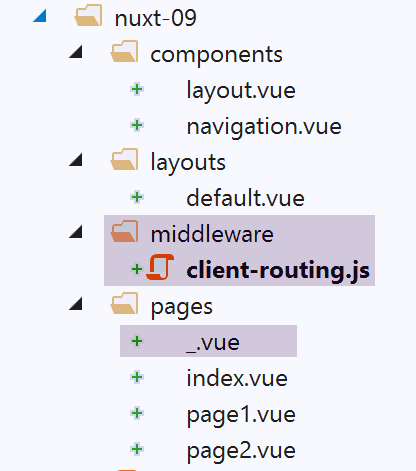

12. Example [nuxt-09]: controlling navigation
The example [nuxt-09] uses a middleware to control the client’s navigation. Additionally, a new view is added for cases where the user requests a URL from the server that does not exist in the application.
The example [nuxt-09] is initially obtained by copying the example [nuxt-01]:

12.1. The [_.vue] page
We mentioned that the application’s routes are built from the contents of the [pages] folder. Here, we have added the [_.vue] page to this folder. This specific page is displayed whenever the application is routed to a page that does not exist. In our example here, this cannot happen for the client. But it can happen for the server if, for example, it is asked for URL or [/nuxt-09/abcd]. Since the page [abcd] does not exist, the page [_.vue] will be displayed. Here, it will be the following:

The code for the page [_.vue] is as follows:
<!-- definition HTML of the view -->
<template>
<!-- layout -->
<Layout :left="true" :right="true">
<!-- alert in the right-hand column -->
<template slot="right">
<!-- message on yellow background -->
<b-alert show variant="warning" align="center">
<h4>La page demandée n'does not exist</h4>
</b-alert>
</template>
<!-- navigation menu in the left-hand column -->
<Navigation slot="left" />
</Layout>
</template>
<script>
/* eslint-disable no-undef */
/* eslint-disable no-console */
/* eslint-disable nuxt/no-env-in-hooks */
import Layout from '@/components/layout'
import Navigation from '@/components/navigation'
export default {
name: '404',
// components used
components: {
Layout,
Navigation
},
// life cycle
beforeCreate() {
// client and server
console.log('[404 beforeCreate]')
},
created() {
// client and server
console.log('[404 created]')
},
beforeMount() {
// customer only
console.log('[404 beforeMount]')
},
mounted() {
// customer only
console.log('[404 mounted]')
}
}
</script>
12.2. The client middleware
The code for the [client-routing] client middleware is as follows:
/* eslint-disable no-undef */
/* eslint-disable no-console */
export default function({ route, from, redirect }) {
// only the customer
if (process.client) {
console.log('[client-routing]')
// desired navigation order
const routes = ['index', 'page1', 'page2', 'index']
// current route
const current = route.name
// previous route
const previous = from.name
// we want a circular navigation
// routes[i] to routes[i+1]
for (let i = 0; i < routes.length - 1; i++) {
if (previous === routes[i] && current !== routes[i + 1]) {
// we stay on the same page
redirect({ name: routes[i] })
return
}
}
}
}
- line 3: we know that the routing function receives only one parameter, the [context] object from the entity executing it, whether server or client. The notation [function({ route, from, redirect })]
- is equivalent to [function({ route:route, from:from, redirect:redirect })];
- which means that { route:route, from:from, redirect:redirect } <-- context;
- which creates three [route, from, redirect] parameters such as:
- route=context.route;
- redirect=context.redirect;
- from=context.from;
The [nuxt] documentation makes extensive use of this notation. It is important to be familiar with it;
- line 8: an array of page names in the desired navigation order
- line 10: the name of the destination page for the current routing;
- line 12: the name of the previous page in the current routing;
- line 14: as an exercise, we will only allow a circular navigation [index --> page1 --> page2 --> index];
- lines 15–21: we iterate through the array giving the order of the desired navigation;
- line 16: if we find that routes[i] was the last routed page, then the next one must be routes[i+1];
- lines 18-19: if this is not the case, redirect the application to routes[i], i.e., do not change pages: reject navigation;
12.3. Execution
We run the example with the following [nuxt.config.js] file:
export default {
mode: 'universal',
/*
** Headers of the page
*/
head: {
title: process.env.npm_package_name || "Introduction à nuxt.js par l'exemple",
meta: [
{ charset: 'utf-8' },
{ name: 'viewport', content: 'width=device-width, initial-scale=1' },
{ hid: 'description', name: 'description', content: process.env.npm_package_description || '' }
],
link: [{ rel: 'icon', type: 'image/x-icon', href: '/favicon.ico' }]
},
/*
** Customize the progress-bar color
*/
loading: { color: '#fff' },
/*
** Global CSS
*/
css: [],
/*
** Plugins to load before mounting the App
*/
plugins: [],
/*
** Nuxt.js dev-modules
*/
buildModules: [
// Doc: https://github.com/nuxt-community/eslint-module
'@nuxtjs/eslint-module'
],
/*
** Nuxt.js modules
*/
modules: [
// Doc: https://bootstrap-vue.js.org
'bootstrap-vue/nuxt',
// Doc: https://axios.nuxtjs.org/usage
'@nuxtjs/axios'
],
/*
** Axios module configuration
** See https://axios.nuxtjs.org/options
*/
axios: {},
/*
** Build configuration
*/
build: {
/*
** You can extend webpack config here
*/
extend(config, ctx) {}
},
// source code directory
srcDir: 'nuxt-09',
router: {
base: '/nuxt-09/',
middleware: ['client-routing']
},
// server
server: {
port: 81, // default: 3000
host: 'localhost' // default: localhost
}
}
Check the following:
- When you are on the [Home] page, you can only navigate to the [Page 1] page;
- when you are on the [Page 1] page, you can only navigate to the [Page 2] page;
- when you are on page [Page 2], you can only navigate to page [Home];
- when you request an incorrect URL, such as [http://localhost:81/nuxt-09b/abcd], you will see a page indicating that the requested page does not exist;